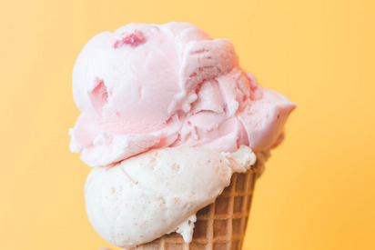
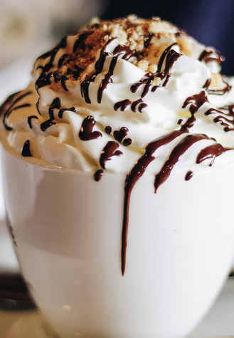

Detta recept valdes eftersom det är enkelt att göra, enligt mig


Ingredienser
- 5 dl grädde (40% eller fetare)
- 2 ägg
- 15 ml socker/sötningsmedel
Steg
Använd två bunkar till glassen
- Bunke 1: Vispa grädden tills den får form, som vispad grädde
- Bunke 2: Vispa äggvita med socker/sötningsmedel tills det får form. Lägg sedan i ägg-gulorna och blanda ihop. Extra ingredienser går att lägga i.
- Blanda ihop smeten med grädden.
- In i frysen upp till en timme (hantera som glass).